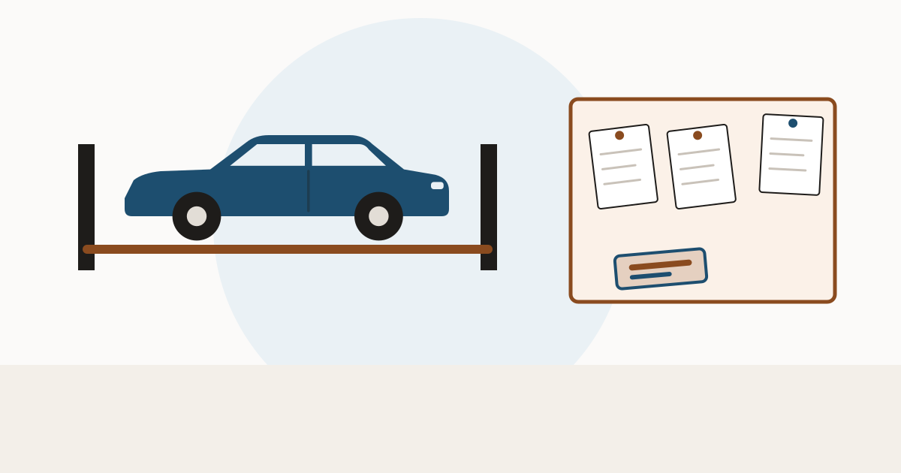

Buying a used car in Michigan: the 75% and 91% lines

Michigan is unusually precise about where a damaged car ends up. Two percentages decide it, and the difference between them is the difference between a car you can register and a pile of parts that can never be titled again.
Two thresholds, two certificates
Michigan compares the estimated cost of repair — parts and labour — against the vehicle's pre-damage actual cash value (MCL 257.217c):
| Repair cost vs pre-damage value | Certificate | What it allows |
|---|---|---|
| 75% up to (but not including) 91% | Salvage certificate | May be possessed, transported and sold, but not driven on a highway until rebuilt and retitled |
| 91% or more | Scrap certificate | May be transported, never driven on a highway — and no new title may ever be issued for that vehicle |
That second row is the one to remember. A Michigan scrap certificate is terminal. If a seller is offering a car on a scrap certificate with a story about how it only needs a little work, there is no paperwork path back to the road in Michigan.
A mechanic now has to sign too
Michigan used to require only a law-enforcement inspection, which checked that no stolen parts had been used — a theft check, not a safety check. A later change added a certification by a licensed mechanic before a rebuilt salvage vehicle can go back on the road, submitted on the same form alongside the salvage title and the salvage certification (Michigan Secretary of State).
For a buyer, that means a Michigan rebuilt car of recent vintage has had two separate people look at it. It does not mean the repair was good — a certification is a floor, not a verdict. See whether a rebuilt title is worth it.
Michigan brands are applied by the state. A title history across states is what shows whether a brand followed the car here.
Run a VIN check at VinCheckUp Advertising disclosure: the link above is an affiliate link. If you buy a report through it, this site may earn a commission at no extra cost to you. It does not change what is written on this page.Which cars get branded at all
The thresholds apply to distressed late model vehicles, and Michigan defines that by age and weight: vehicles weighing four tons or less must be within the last six model years, and heavier vehicles within the last sixteen.
The consequence matters more than it sounds. An ordinary car older than six model years can be wrecked badly, repaired, and sold in Michigan without the salvage machinery engaging at all. The title stays clean because the car was never in scope — not because the damage was minor. On an older Michigan car, the title tells you less than it does on a newer one, and the inspection tells you more. See why a clean title does not mean no accidents.
Who files, and when
- Insurer that takes ownership: the owner assigns the title, the insurer surrenders it and applies. The insurer cannot sell the vehicle until it holds the salvage or scrap title.
- Owner keeps the car after a payout: the owner signs the application and the insurer files on the owner's behalf.
- Dealer acquiring a distressed late model vehicle: must apply within five days of receiving the assigned title.
- An owner acting alone may classify a vehicle as salvage or scrap without determining its actual cash value at all.
That last point is worth pausing on. A Michigan salvage brand does not always mean an insurer ran the numbers. An owner can apply one directly.
Buying checklist for Michigan
- Read the certificate and confirm the word: title, salvage, or scrap.
- If rebuilt, ask for the inspection paperwork — both the law-enforcement portion and the mechanic's certification.
- Ask for the parts receipts the rebuilder submitted. They name donor vehicles.
- Pull a title history to see whether a brand was applied in another state before the car arrived — see title brands and title washing.
- Have it inspected independently, on a lift — see the pre-purchase inspection.
Check the title history across states before you accept a Michigan clean title at face value.
Run a VIN check at VinCheckUp Advertising disclosure: the link above is an affiliate link. If you buy a report through it, this site may earn a commission at no extra cost to you. It does not change what is written on this page.